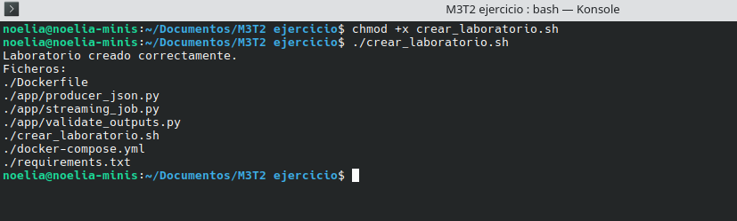

Ejercicio propuesto: Kafka + Spark Structured Streaming
ENUNCIADO
En esta práctica vas a ejecutar una versión actualizada del ejemplo kafka-spark-streaming-example. El repositorio original trabaja con ZooKeeper, Spark Streaming clásico, Kafka 0.8, Hive local y una instalación manual extensa. En esta versión se mantiene el objetivo didáctico, pero se moderniza el laboratorio usando Docker Compose, Kafka en modo KRaft, Spark Structured Streaming, eventos JSON y salida en Parquet.
Aunque se puede preparar el laboratorio de manera manual siguiendo las instrucciones de esta página, se ha creado un cuaderno Jupyter con el paso a paso del ejercicio y las soluciones a las preguntas planteadas aquí.
Objetivo
- Generar eventos simulados tipo tweet en formato JSON desde un productor Python.
- Publicar los eventos en un topic Kafka llamado
tweets. - Consumir el topic desde Spark Structured Streaming.
- Validar y transformar los eventos recibidos.
- Guardar eventos válidos en Parquet.
- Enviar eventos inválidos a una zona de cuarentena.
- Generar métricas por microbatch para comprobar el procesamiento.
FICHEROS DISPONIBLES
A continuación se proporcionan los ficheros necesarios para ejecutar este ejercicio:
- Dockerfile: imagen del contenedor de laboratorio con Python, Java y PySpark.
- docker-compose.yml: servicios
kafkaylab. - crear_laboratorio.sh: script de apoyo para recrear la estructura si fuera necesario.
Si tu copia local ya contiene la carpeta app/, output/ y
checkpoint/, no ejecutes el script de creación. Si falta la aplicación Python,
puedes usar crear_laboratorio.sh como mecanismo de recuperación.
EJECUCIÓN PASO A PASO
0. Requisitos
Necesitas Docker y Docker Compose. En Ubuntu/Debian puedes comprobarlo con:
docker --version
docker compose version
docker run --rm hello-world1. Creamos la estructura del laboratorio
Ejecutamos el script para crear las carpetas y ficheros necesarios, para ello

Imagen 1: creación de la estructura del proyecto
2. Construir la imagen del laboratorio
La primera ejecución puede tardar varios minutos porque descarga Python, Java, PySpark y sus dependencias.
docker compose build
El resultado esperado es una construcción sin errores, con un mensaje final similar a
DONE o Successfully built.
3. Arrancar Kafka
docker compose up -d kafka
Comprueba el estado del servicio y espera hasta que Kafka aparezca como
healthy:
docker compose ps4. Crear el topic tweets
docker compose exec kafka /opt/kafka/bin/kafka-topics.sh \
--bootstrap-server kafka:9092 \
--create \
--if-not-exists \
--topic tweets \
--partitions 3 \
--replication-factor 1Verifica que el topic existe y que tiene tres particiones:
docker compose exec kafka /opt/kafka/bin/kafka-topics.sh \
--bootstrap-server kafka:9092 \
--describe \
--topic tweets5. Producir eventos JSON
docker compose run --rm lab \
python /workspace/app/producer_json.py \
--bootstrap-server kafka:9092 \
--topic tweets \
--messages 300 \
--sleep 0.01La salida esperada debe mostrar el avance de envío:
Eventos enviados: 25
Eventos enviados: 50
...
Finalizado. Total eventos enviados: 3006. Ver mensajes en Kafka
docker compose exec kafka /opt/kafka/bin/kafka-console-consumer.sh \
--bootstrap-server kafka:9092 \
--topic tweets \
--from-beginning \
--max-messages 5
Deben verse mensajes JSON con campos como event_id,
event_time, source, text,
hashtags y mentions.
7. Ejecutar Spark Structured Streaming
docker compose run --rm lab \
spark-submit \
--packages org.apache.spark:spark-sql-kafka-0-10_2.12:3.5.1 \
/workspace/app/streaming_job.py \
--bootstrap-server kafka:9092 \
--topic tweets \
--output /workspace/output \
--checkpoint /workspace/checkpoint/tweets_streamLa primera ejecución puede tardar porque Spark descarga el conector Kafka desde Maven. Una salida válida debe indicar que se ha procesado al menos un batch:
Batch 0: validos=300, invalidos=0, metricas=1
Consulta finalizada.VALIDACIÓN
Ejecuta el validador incluido en la aplicación:
docker compose run --rm lab \
python /workspace/app/validate_outputs.pyResultado esperado:
== tweets_valid ==
Registros: 300
== tweets_quarantine ==
Registros: 0
== tweets_metrics ==
Registros: 1También puedes revisar los ficheros generados desde tu máquina:
find output -maxdepth 3 -type f | sort
find checkpoint -maxdepth 3 -type f | sortRepetir desde cero
Para limpiar resultados y checkpoints de una ejecución anterior:
rm -rf output/* checkpoint/*Después vuelve a producir eventos y ejecuta de nuevo el job Spark.
Parar el laboratorio
docker compose downPara borrar también los volúmenes internos de Kafka:
docker compose down -vEJERCICIOS DE MEJORA
-
Latencia extremo a extremo: calcula la diferencia entre
event_tsyprocessed_time. Guarda media, mínimo y máximo por microbatch. - Particionado: compara una ejecución con un topic de una partición y otra con tres particiones. Analiza tiempo total, distribución de offsets, número de ficheros generados y efecto sobre el paralelismo.
-
Eventos inválidos: modifica el productor para generar un 5% de
mensajes sin
event_id, sintexto con JSON mal formado. Comprueba que aparecen enoutput/tweets_quarantine. - Salida agregada por ventana: genera métricas por ventana de evento de un minuto con total de eventos, longitud media, hashtags y menciones.
- Migración conceptual: documenta qué partes del ejemplo original se han sustituido: ZooKeeper por KRaft, Spark Streaming clásico por Structured Streaming, Hive textfile por Parquet, texto plano por JSON y ejecución manual por Docker Compose.
-
Sink alternativo: escribe los eventos enriquecidos en otro topic Kafka
llamado
tweets_enriched. -
Idempotencia: ejecuta dos veces el job con el mismo checkpoint y
comprueba que no reprocesa los mismos offsets. Después borra
checkpoint/, ejecuta otra vez y explica qué ocurre.
Pistas útiles
Para calcular latencia puedes usar unix_timestamp:
from pyspark.sql.functions import unix_timestamp
latency_seconds = unix_timestamp("processed_time") - unix_timestamp("event_ts")Para preparar un mensaje JSON de salida hacia Kafka puedes usar:
from pyspark.sql.functions import to_json, struct
out = valid.selectExpr("CAST(event_id AS STRING) AS key") \
.withColumn("value", to_json(struct("*"))) \
.select("key", "value")PROBLEMAS FRECUENTES
Kafka no está listo
Espera a que el healthcheck termine y revisa el estado:
docker compose ps
docker compose logs kafka --tail=50UnknownHostException: kafka
Este error suele aparecer cuando ejecutas Spark fuera de Docker. La guía está pensada
para ejecutar productor y Spark dentro del servicio lab, usando
kafka:9092 como bootstrap server.
Error descargando paquetes Maven
El primer spark-submit --packages necesita internet para descargar el
conector Spark-Kafka. Repite cuando haya red o configura un repositorio Maven interno.
Error instalando openjdk-17-jre-headless
Si docker compose build falla en la línea de apt-get install
con exit code: 100, asegúrate de que el Dockerfile use la
imagen base python:3.11-slim-bookworm. Después ejecuta:
docker compose build --no-cache labNo aparecen nuevos datos
Si usas el mismo checkpoint, Spark continúa desde el último offset procesado. Para una prueba desde cero:
rm -rf checkpoint/* output/*Hay muchos ficheros pequeños
Es normal en laboratorios con microbatches. En producción se ajustan particiones, frecuencia de trigger y procesos de compactación.